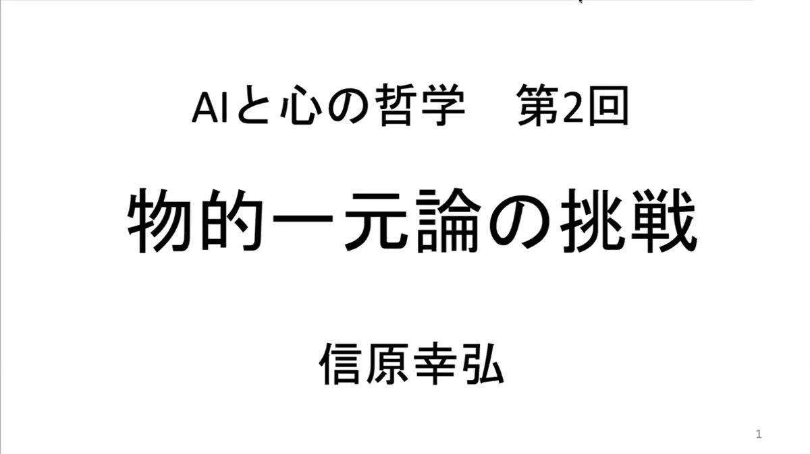
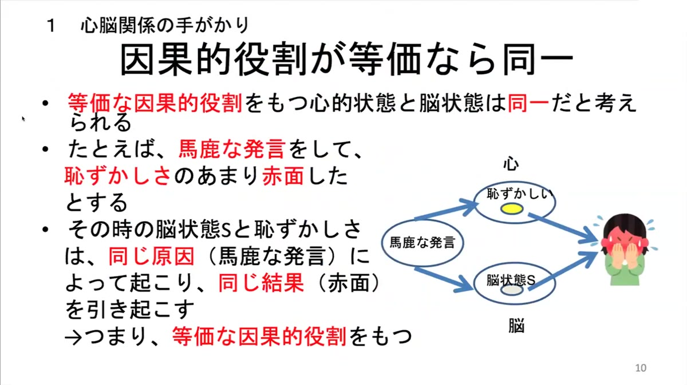
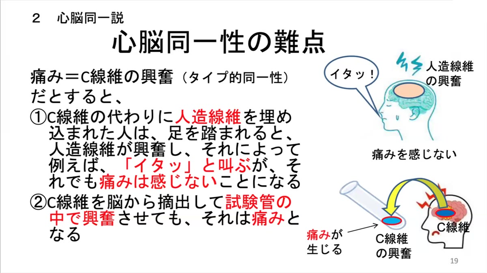
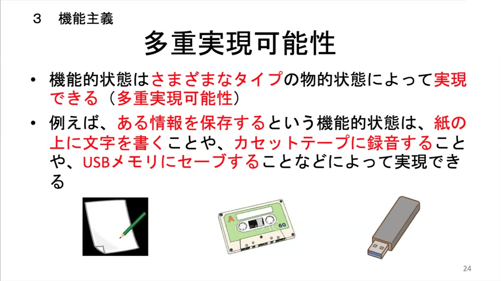
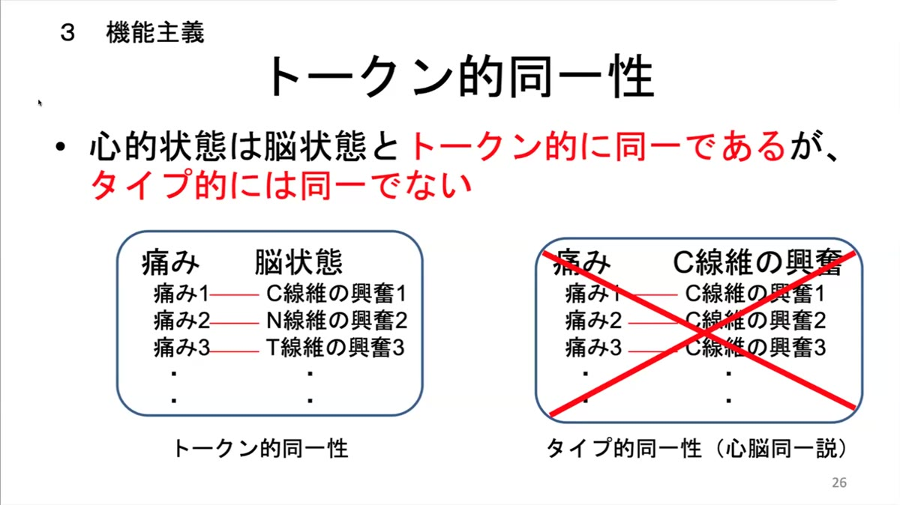
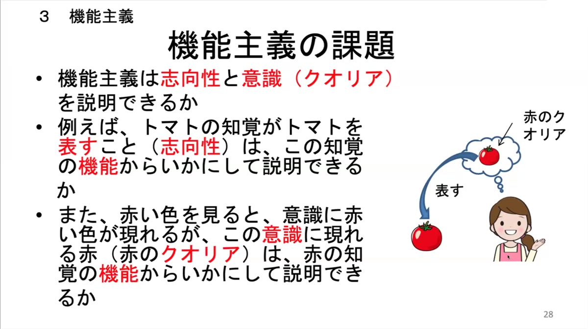

信原ゼミ「心の哲学とAIの哲学」
第2回 講義動画・AIまとめ
このページは、講義のZoom録画の文字起こしをもとにAIが作成したまとめ（AIまとめ）です。発言の要約にあたって表現を整えています。
講義動画（約2時間18分）。信原先生のレクチャー部分です。開始前の打ち合わせ、途中の休憩（約7分）、講義後のディスカッションはカットしています。講義中の質問・応答は含みます。
動画はYouTube限定公開です。リンクを知っている方のみ視聴できます。URLの再配布はご遠慮ください。※以下「講義内容」の見出しの時刻は、講義動画の再生時間に対応しています。
第2回のテーマは「物的一元論の挑戦」。前回、常識に根ざした心身二元論の魅力と難点を見たのを受けて、今回から「心は物質（とりわけ脳）にほかならない」とする物的一元論の可能性を本格的に探り始めた。心と脳の関係を探る手がかりから心脳同一説へ、その難点を免れる立場として機能主義へと進み、最後に機能主義に残る二つの大きな課題——志向性と意識——が示された。
鍵になったのはタイプ的同一性とトークン的同一性の区別。先生はこれを「心脳同一説と機能主義を分かつ決定的な区別」と呼び、今日はこれをよく理解してほしいと強調した。講義の途中では、「心的状態」の範囲、議論の前提の妥当性、科学と哲学の役割分担などをめぐって、参加者から多くの質問が寄せられた。

冒頭で先生は、先週末の意識研カンファレンス「マシン・コンシャスネス」での講演「意識と汎用表象」に触れ、その内容は次回から4回続く「志向性と意識」の回を1回分に凝縮したものだと紹介した。
続いて前回の復習。心身問題には論理的に可能な三つの答えがある。心と物質は別物だとする二元論、心は物質にほかならないとする物的一元論（唯物論・物理主義）、物質は心にほかならないとする心的一元論（唯心論・観念論）。このゼミでは物的一元論の可能性を探っていく。今日の流れは、①心脳関係の手がかり（共起性、因果連関の同型性）、②心脳同一説（タイプ的同一性とトークン的同一性）、③機能主義（機能的状態、多重実現可能性）である。
Q. ここでいう「心的状態」は、心的表象、心的機能、クオリアなど、どこまでを含むのか？
A. 何かを表す状態なら表象内容をもち、意識的な状態ならクオリアを備えている。表象内容やクオリアの有無を問わず、無意識的なものも含めて、心の状態であればすべて含む。
Q. ブレンターノは心はすべて志向性をもつとし、サールは志向性のない心的状態も認めていたと思うが、先生はどう考えるか？
A. 普通は、痛みやかゆみのような感覚は何も表さない「非志向的」な心的状態とされる。しかし自分はクオリアについて表象理論をとるので、すべての心的状態は志向的だと考えている。ただ、ゼミの出発点としては、志向的なものと非志向的なものの2種類がある、という普通の整理から始める。
チャットからは、スワンプマンのように物理的に自分とまったく同じ存在が現れたら心の状態も同じになるのか、という質問が寄せられた。先生は、自分は機能主義のなかでも目的論的機能主義をとるので、進化の歴史をもたないスワンプマンは目的論的な機能をもたず、したがって心をもたない、と答えた。さらに、スワンプマンのような存在はそもそも成り立たないと考えているので、この思考実験自体に根本的には意味がない、とも。この話は志向性の回で詳しく扱う。
一つ目の手がかりは共起性。心的状態は、ある脳状態と同時に起こる。心の哲学の伝統的な例では「痛みはC線維の興奮と共起する」「恐怖は扁桃体の活動と共起する」と言われる。ただし先生は、今日の神経科学によれば痛みと共起する脳活動はC線維の興奮だけではなく、恐怖にも扁桃体以外の活動が関わっているはずで、これらは正確な例ではないと断ったうえで、「善意に、寛大に解釈してほしい」と話を進めた。
心的状態と共起する脳活動は、心的状態の神経相関物（neural correlate）と呼ばれる。一か所に局在している必要はなく、脳のあちこちに散らばっていてもよい。初期の脳科学は、ある心の状態のときにだけ活動する部位を赤く塗って示す「塗り絵脳科学」と呼ばれたが、今日では脳状態どうしの因果的なつながりまで明らかにする「システム脳科学」へと一段階進んでいる。途中、「分子構造まで自分と同一な存在が現れたら、意識状態も同一だと心脳同一説は考えるのか」という質問があり、先生は「心脳同一説ではそうなる。そのときの同一はタイプ的な同一だ」と答えた。
しかし、共起性だけでは同一性は言えない。火と煙はいつも一緒に起こるが同じものではなく、共通の原因（物の燃焼）があるから同時に起こるだけである。そこで、同一性を言うためのもう一つの手がかりとして、因果連関に注目することになる。

心的状態は、他の心的状態や、外界からの刺激（光、音、においなど）、外界への行動（身体の動きだけでなく発話や表情も含む）とともに、複雑な心的因果連関をつくっている。刺激を受けて心の状態が生じ、心の状態どうしが作用し合って「医者に行こう」という意思決定が形成され、実際に医者に行く。脳状態の側にも同じように複雑な神経因果連関があり、この二つは「同型」である。言い換えれば、心的状態とそれに対応する脳状態は等価な因果的役割をもつ。
では、等価な因果的役割をもつ心的状態と脳状態は同一だと言えるか。馬鹿な発言をして恥ずかしくなり、赤面する。このとき恥ずかしさと相関する脳状態Sも、同じ原因によって起こり、同じ結果を引き起こしている。仮に両者が別の状態だとすると、赤面の起こり方は二つしかない。①協力し合った（両方とも必要で、一方だけでは不十分）か、②過剰決定だった（両方とも十分で、一方があれば他方は不要）か。しかし、恥ずかしささえあれば赤面は起こると私たちは考えるので①はもっともらしくなく、脳状態Sがなくても赤面が起きたとも言えないので②ももっともらしくない。したがって、恥ずかしさと脳状態Sは同じ状態だと考えるべきだ——というのがこの議論である。
この議論をめぐって、講義中でもっとも長い質疑が続いた。
Q. 意識に上らない脳状態もあるが、それもここでは心に含めて議論しているのか？
A. 「意識に上る・上らない」はまずは心的状態について言うことで、心的状態と脳状態の同一性が確保される前の段階では「無意識的な脳状態」という言い方はしない。無意識的な心的状態も、もちろんここでは含めている。
Q. 「協力し合う」はもっともらしくないのか。一般の因果関係なら、二つの状態がともに必要という因果グラフは十分ありうるのでは？
A. 一般の因果グラフとしてありうるのはその通りで、ここで問題にしているのは、この日常的な事例について、日常的な観点から見て協力し合うというあり方がもっともらしいかどうかだ。——質問者が「この日常的な事例では、協力し合うというのがもっともらしくないとすれば同一説がもっともらしい、という議論として受け取ればよいのですね」と確認し、先生もそれを認めた。
別の参加者からは、赤面したあとで恥ずかしさが生じる（「悲しいから泣くのか、泣くから悲しいのか」）可能性もあるのでは、という問題提起があり、これには、前のスライドで因果構造の同一性を仮定しているので、ここではいわゆるウィリアム・ジェームズ的な考え方はとらない、という整理が別の参加者から示された。
脳科学を研究する参加者からは、脳状態Sは毎回、神経活動として同じではありえず、その境界をどう決めるのか、かなり理想化された想定ではないか、というコメントが出た。先生は「おっしゃる通り」と認めたうえで、機能主義に進んでも明瞭な基準がすぐに出てくるわけではない、明瞭化しなければならないことは山ほどあるが、最初からそのような明瞭化が不可能とはいえないので、明瞭化はあとで行うことにして、まずは大まかな話として行っている、と応じた。さらに、心的状態どうしの因果と、心的状態と物理現象（赤面など）のあいだの因果を区別しなくてよいのか、という質問には、心的因果連関には両方を含めており、心と物のあいだの因果が本当に成り立つのかは大きな問題として背後に控えているが、ここでは常識のレベル——「50年ほど前の脳科学の段階」の素朴な語り方——で話している、と答えた。
以上の手がかりをもとに唱えられるのが心脳同一説、すなわち心的状態は脳状態と同一だという立場である。ただし同一性にはタイプ的同一性とトークン的同一性の区別があり、心脳同一説が主張するのはタイプ的同一性のほう。これは「水とH₂Oが同一だ」と言うときと同じ種類の同一性である。
タイプとトークンの区別は「リンゴ」という言葉で説明された。ある人がある時に黒板に書いた「リンゴ」、別の時に発話された「リンゴ」——こうした一つひとつの具体的な事例が「リンゴ」という言葉のトークン（個別事例）であり、それらをまとめる普遍の側、「リンゴという言葉」そのものがタイプである。もともとは言語学の語り方で、哲学では伝統的に「普遍と個」と呼ばれてきたものに当たる。
AとBがタイプ的に同一だとは、Aのいかなるトークンも Bのトークンであり、その逆も成り立つということ。「痛みとC線維の興奮がタイプ的に同一」なら、C線維の興奮でない痛みはありえない。これに対してトークン的同一性は、トークンどうしの同一性である。痛み1はC線維の興奮1、痛み2は（人工的に作られた）N線維の興奮2、痛み3はT線維の興奮3というように、対応する脳状態のタイプはばらばらでもよい。したがって、タイプ的同一性はトークン的同一性を含意するが、その逆は成り立たない。
心脳同一説を動機づけているのは、科学的探究によって確立されてきたさまざまな同一性である。水＝H₂O、稲光＝電気放電、遺伝子＝DNA。科学の発展とはこうした同一性を確立することだと言いたくなるほどだ。これらはいずれもタイプ的であり、そして経験的である。水の概念をいくら分析しても、水がH₂Oであることは出てこない。電気分解のような経験的な探究が必要になる。心脳同一説は、心的状態と脳状態のタイプ的同一性も同じように経験的に確立されると考える。
チャットからは「何と何が同一かは、人の目や頭で素朴に判定できるという前提なのか」という質問があり、先生は経験的でない仕方で確立される同一性もあると述べ、その例として「2＋3＝4＋1」のような数学的同一性を挙げて説明した。

痛み＝C線維の興奮というタイプ的同一性が成り立つとすると、二つの奇妙な帰結が出てくる。①C線維の代わりに人造線維を脳に埋め込まれた人は、足を踏まれて「イタッ」と叫んでも、痛みを感じていないことになる。②C線維を脳から摘出して試験管の中で興奮させると、それは痛みだということになる。どちらももっともらしくない。
ここからわかるのは、ある状態が痛みであるかどうかにとって重要なのは、それが物的にどんな状態か（C線維の興奮かN線維の興奮か）ではなく、どんな因果的役割をもつか——足を踏まれると生じ、「痛い」という発話を引き起こすか——だということである。この因果的役割に注目するのが、次の機能主義である。
このあと約7分の休憩がありました（動画ではカットしています）。
休憩明けには、チャットに寄せられたコメントや質問がまとめて取り上げられた。
機能主義には二つの柱がある。①心的状態は、心的因果連関のなかで果たす因果的役割（機能）によって定義される状態、すなわち機能的状態である。②心的状態の機能は、脳状態によって実現される。心的状態はその機能によって定義されるので、これを「心的状態は脳状態によって実現される」と言い換えてもよい。
痛みを例にとれば、痛みとは、足を踏まれる、針で刺されるといった原因によって引き起こされ、顔をしかめる、痛みを和らげたいと欲するといった結果を引き起こす、そういう因果的役割によって定義される状態である。普通、痛みは「痛いという感じ」（痛みのクオリア）を備えた状態として捉えられるので、これは日常の捉え方とはかなり異なる。ただし先生は、いずれクオリアも機能だという話に進むので、ここで「痛みはクオリアによって定義されるのではない」というときのクオリアは「機能的でないものと考えられたクオリア」のことだ、と注意を促した。
Q. ここでいう機能とは、外から観察できるパフォーマンスではなく、因果の連鎖の輪としての役割のことか？
A. 直接因果的につながっているものだけで決まる役割ではなく、それらを通じて間接的につながっているものも含めた、心的因果連関全体のなかでの役割だ。その連関をどこまで広げるのか（行動の先で机が動くことまで含むのか）は曖昧で、実はそれが機能主義の内部で哲学上の重大な論点になる。

機能的状態は、さまざまなタイプの物的状態によって実現できる（多重実現可能性）。心的状態も機能的状態だとすれば、痛みはC線維の興奮によっても、しかるべき人造線維の興奮によっても実現されうる。さらに、デジタルなものがしかるべきあり方をしていれば、心がデジタルによって実現されることも原理的には可能になる。実際にはデジタルではそうした機能を実現できないと経験的に明らかになるかもしれないが、可能だと明らかになる可能性もある。

機能主義では、心的状態と脳状態の関係はトークン的同一性になる。痛み1はC線維の興奮1によって、痛み2はN線維の興奮2によって実現され、それぞれトークンとして同一。どの痛みも同じタイプの脳状態で実現されているわけではないので、タイプ的同一性は成り立たない。
Q. 科学理論は普通、タイプについて語る。機能のタイプ同一性を言えばよいのでは？ わざわざトークン的同一性を言う意義は何か？
A. 機能的状態としてはC線維の興奮もN線維の興奮も同じで、それと痛みがタイプとして同一だというのは確かにその通り。しかし問題にしたいのは、機能には尽くされない物的なあり方をもつ脳状態と痛みとの関係だ。心脳問題には「物的な脳状態がなくても心的状態はあるのでは」という二元論的な誘惑がつねにある。機能的状態といっても、それを実現する物的なものなしにはありえない——物的一元論である以上、そのことをたえず強調しなければならない。

機能主義は、心脳同一説の二つの難点をまさに免れる。人造線維の興奮は痛みの機能を実現しているのでその人は痛みを感じており、試験管の中のC線維の興奮は痛みの機能を実現していないので痛みは生じていない。
しかし先生は、機能主義には「圧倒的に課題しかない」と言っていいほどの課題があり、ここまでの段階では心脳同一説よりはよいと言えるくらいだ、と述べた。機能主義が適切だと言うためには、次の二つに説得的に答えなければならない。
次回以降、まず志向性を機能によって説明し、それを踏まえてクオリアの説明を試みる。うまくいけば、機能主義がそれなりに説得力のある哲学的立場だと示せるだろう——というところで、この日の講義は締めくくられた。
講義は21時59分ごろに終わり、その後22時50分ごろまで質疑が続いた（この部分は動画に含まれません）。主なやりとりを要約する。
第2回は、物的一元論への第一歩として、「心的状態と脳状態は同一だ」という考えがどこから来て、どこでつまずき、どう立て直されるのかをたどる回だった。共起性だけでは同一性は言えないが、等価な因果的役割をもつなら同一と考えるべきだ。そこから生まれた心脳同一説はタイプ的同一性を主張するが、人造線維や試験管の例で行き詰まる。重要なのは物的な素材ではなく因果的役割だ——こうして機能主義が導かれ、心的状態は多重実現可能な機能的状態であり、脳状態とはトークン的に同一である、という見取り図が示された。
一方で先生は、機能主義には「圧倒的に課題しかない」とも言う。志向性とクオリア。物的なものにはないように見えるこの二つの特徴を機能から説明できるかどうかが、物的一元論の成否を決める。次回からの4回は、まさにこの難所に挑むことになる。
このレポートはZoom録画の文字起こしをもとにAIが作成し、意識研究財団 事務局が確認したものです。発言の要約にあたって表現を整えています。
← 信原ゼミ 参加者ページに戻る